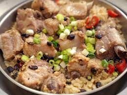

豆豉排骨
這豆豉排骨是一道湘菜，因為做法簡單又特別美味，所以遍布全國各地，每個地方都會做有
雖然說這是一道家常菜但是由於美味好吃深受各地人們喜愛
美食就是因為好吃才能稱為美食。其實在廣西這邊各個餐廳都有做來賣，都是挺美味的
這道美食就是將豆豉和排骨外加一些配料調料製作而成，
做出來的美食有著排骨的香味外有豆豉的味道一起混搭，吃起來很香，口感很好，而且做法簡單容易學。

脆皮燒肉
燒鴨
燒賣
心得報告